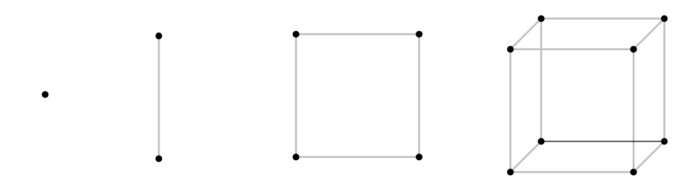
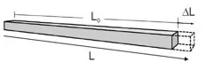
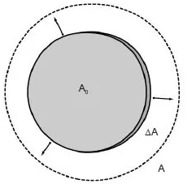
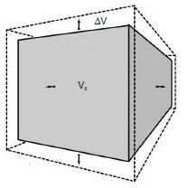
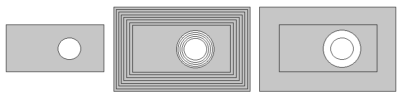

Aula6-39: Dilatação térmica dos sólidos
Temperatura
Conforme estudamos, a temperatura de um objeto é a medida da agitação das partículas que o compõem. Assim, ao elevarmos a temperatura de um corpo, as partículas que o constituem vibram mais e, vibrando mais, passam a manter entre si uma distância média maior. A esse fenômeno — o aumento da distância média entre as partículas, que acaba por alterar o tamanho do objeto — damos o nome de dilatação.
⚛ DIMENSÕES
Todo corpo é tridimensional; no entanto, às vezes podemos desprezar uma ou duas de suas dimensões para efeito de cálculo. Assim, ao calcularmos os efeitos da elevação de temperatura sobre, por exemplo, uma barra delgada, pode ser mais conveniente fazermos a análise física considerando apenas uma dimensão (no caso, o comprimento da barra). Abaixo, uma representação do que seria um objeto adimensional, unidimensional, bidimensional e tridimensional.

Dilatação linear (unidimensional)
É a dilatação que estudamos ao analisar um corpo com apenas uma dimensão considerável (lembrando que as outras duas são desprezíveis).
|
A variação de comprimento depende sempre do tamanho inicial do objeto, da composição química do objeto e, por fim, da variação de temperatura a que ele é submetido. A fórmula que nos dá a variação de comprimento em função desses fatores é:
|
 |
Dilatação superficial (bidimensional)
É a dilatação que estudamos ao analisar um corpo com duas dimensões consideráveis (lembrando que a terceira dimensão é desprezível).
|
A variação de área superficial depende, assim como no caso anterior, do tamanho inicial do objeto, da composição química do objeto e, por fim, da variação de temperatura a que ele é submetido.
|
 |
Dilatação volumétrica (tridimensional)
É a dilatação que estudamos ao analisar um corpo em que as três dimensões têm proporções consideráveis.
|
A variação de volume depende, assim como no caso anterior, do tamanho inicial do objeto, da composição química do objeto e, por fim, da variação de temperatura a que ele é submetido.
|
 |
Dilatação térmica de chapa com cavidade circular

Atenção: após a dilatação, a cavidade também aumenta, como se estivesse preenchida pelo material.